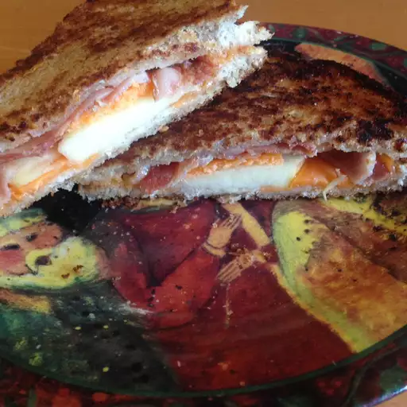

Apple & Bacon Grilled Cheese

A Delicious Grilled Cheese with added Apple & Bacon Flavor!
This recipe takes 15 minutes, and yields 1 sandwich
This Recipe was stolen (with love) from AllRecipes.com!
Ingredients
- 2 Slices of Bread
- 2 Slices of Cheddar Cheese
- 2 Slices of Apple
- 2 Bacon Strips
Instructions
- Preheat your Panini Press.
- Set one slice of bread on a work surface. Top bread with 1 slice cheese, apple slices, bacon slices, and remaining 1 slice cheese. Place remaining bread slice on top.
- Cook sandwich in the preheated panini press until bread is lightly toasted and cheese begins to melt, about 5 minutes.